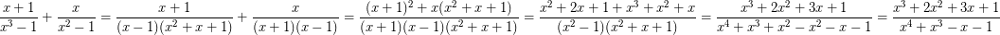
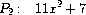

2.5 Systems with Generic Operations
2.5 総称的演算を使ったシステム
In the previous section, we saw how to design systems in which data objects can be represented in more than one way. The key idea is to link the code that specifies the data operations to the several representations by means of generic interface procedures. Now we will see how to use this same idea not only to define operations that are generic over different representations but also to define operations that are generic over different kinds of arguments. We have already seen several different packages of arithmetic operations: the primitive arithmetic (+, -, *, /) built into our language, the rational-number arithmetic (add-rat, sub-rat, mul-rat, div-rat) of section 2.1.1, and the complex-number arithmetic that we implemented in section 2.4.3. We will now use data-directed techniques to construct a package of arithmetic operations that incorporates all the arithmetic packages we have already constructed.
前節では、二通り以上の方法でデータオブジェクトを表現できるシステムの、設計の仕方を見た。 鍵となる考え方は、データ演算を指定するコードを、総称的なインタフェイス手続きを用いて、いくつかの表現に結びつけることだ。 今度は、どのようにしてこの同じ考え方を、様々な表現に対して総称的であるような演算を定義するためだけでなく、様々な引数の種類に対して総称的であるような演算を定義するためにも使うのか、ということを見てゆこう。 私たちは既に、算術演算のいくつかの異なるパッケージ——私たちの言語に組み込まれている原始的な算術 (+ と - と * と /) や、2.1.1節の有理数の算術 (add-rat と sub-rat と mul-rat と div-rat) や、2.4.3節で実装した複素数の算術——を見てきた。 今度は、データ指向の技法を使い、今までに構築してきたすべての算術パッケージを取り込んだ算術演算のパッケージを構築する。
Figure 2.23 shows the structure of the system we shall build. Notice the abstraction barriers. From the perspective of someone using ``numbers,'' there is a single procedure add that operates on whatever numbers are supplied. Add is part of a generic interface that allows the separate ordinary-arithmetic, rational-arithmetic, and complex-arithmetic packages to be accessed uniformly by programs that use numbers. Any individual arithmetic package (such as the complex package) may itself be accessed through generic procedures (such as add-complex) that combine packages designed for different representations (such as rectangular and polar). Moreover, the structure of the system is additive, so that one can design the individual arithmetic packages separately and combine them to produce a generic arithmetic system.
図2.23は、私たちが作ることになるシステムの構成を示している。 抽象化の防壁に注意せよ。 「数」を使う誰かの視点からすると、どんな数が与えられようとも動作する add という単一の手続きがある訳だ。 add は、普通の算術・有理数の算術・複素数の算術という別々のパッケージを、数を使うプログラムから一律な方法でアクセスできるようにする、総称的なインタフェイスの、一部である。 個別のどのパッケージも (たとえば複素数パッケージ)、それ自体が、異なる表現 (たとえば直交表現と極表現) 用に設計されたパッケージ同士を結びつける総称的な手続き (たとえば add-complex) を通じて、アクセスされる可能性がある。 さらに、システムの構造が加法的なので、個々の算術パッケージを別々に設計することができるし、それらを結合して総称的な算術システムを作り出すことができる。

2.5.1 Generic Arithmetic Operations
2.5.1 総称的な算術演算
The task of designing generic arithmetic operations is analogous to that of designing the generic complex-number operations. We would like, for instance, to have a generic addition procedure add that acts like ordinary primitive addition + on ordinary numbers, like add-rat on rational numbers, and like add-complex on complex numbers. We can implement add, and the other generic arithmetic operations, by following the same strategy we used in section 2.4.3 to implement the generic selectors for complex numbers. We will attach a type tag to each kind of number and cause the generic procedure to dispatch to an appropriate package according to the data type of its arguments.
総称的な算術演算を設計するという課題は、総称的な複素数演算を設計するという課題に似ている。 私たちは、たとえば、普通の数の上での普通の原始的な加算である + や、有理数上の add-rat や、複素数上の add-complex であるかのように振る舞う、add という総称的な加算手続きが、欲しいのだ。 私たちは add やその他の総称的な算術演算を実装できる——複素数用の総称的セレクタを実装するために2.4.3節で使ったのと同じ戦略にしたがうことによって。 どの種類の数にも型タグを付けることにして、総称的な手続きには、引数のデータ型に応じて適切なパッケージへと振り分けを行うようにさせよう。
The generic arithmetic procedures are defined as follows:
総称的な算術手続きは、以下のように定義される。
(define (add x y) (apply-generic 'add x y)) (define (sub x y) (apply-generic 'sub x y)) (define (mul x y) (apply-generic 'mul x y)) (define (div x y) (apply-generic 'div x y))
We begin by installing a package for handling ordinary numbers, that is, the primitive numbers of our language. We will tag these with the symbol scheme-number. The arithmetic operations in this package are the primitive arithmetic procedures (so there is no need to define extra procedures to handle the untagged numbers). Since these operations each take two arguments, they are installed in the table keyed by the list (scheme-number scheme-number):
普通の数——つまり、私たちの言語の原始的な数——を扱うためのパッケージをインストールすることから始める。 これらの数に、scheme-number という記号のタグを付けよう。 このパッケージでの算術演算は、原始的な算術手続きである (だから、タグを外した数を扱うための追加的な手続きを定義する必要がない)。 これらの演算は各々二つの引数をとるので、これらの演算は、(scheme-number scheme-number) というリストによるキーが与えられている表にインストールされる。
(define (install-scheme-number-package) (define (tag x) (attach-tag 'scheme-number x)) (put 'add '(scheme-number scheme-number) (lambda (x y) (tag (+ x y)))) (put 'sub '(scheme-number scheme-number) (lambda (x y) (tag (- x y)))) (put 'mul '(scheme-number scheme-number) (lambda (x y) (tag (* x y)))) (put 'div '(scheme-number scheme-number) (lambda (x y) (tag (/ x y)))) (put 'make 'scheme-number (lambda (x) (tag x))) 'done)
Users of the Scheme-number package will create (tagged) ordinary numbers by means of the procedure:
scheme-numberパッケージの利用者は、以下の手続きを用いて、(タグ付けされた) 普通の数を作り出すだろう。
(define (make-scheme-number n) ((get 'make 'scheme-number) n))
Now that the framework of the generic arithmetic system is in place, we can readily include new kinds of numbers. Here is a package that performs rational arithmetic. Notice that, as a benefit of additivity, we can use without modification the rational-number code from section 2.1.1 as the internal procedures in the package:
さて今や、総称的算術システムの枠組みの準備が整ったので、新しい種類の数をすぐにでも含めることができる。 ここに、有理数の算術を実行するパッケージを示す。 加法性の利点として、私たちは、2.1.1節から持ってきた有理数に関するコードを、修正することなく、パッケージ内の内部手続きとして使える。
(define (install-rational-package) ;; internal procedures (define (numer x) (car x)) (define (denom x) (cdr x)) (define (make-rat n d) (let ((g (gcd n d))) (cons (/ n g) (/ d g)))) (define (add-rat x y) (make-rat (+ (* (numer x) (denom y)) (* (numer y) (denom x))) (* (denom x) (denom y)))) (define (sub-rat x y) (make-rat (- (* (numer x) (denom y)) (* (numer y) (denom x))) (* (denom x) (denom y)))) (define (mul-rat x y) (make-rat (* (numer x) (numer y)) (* (denom x) (denom y)))) (define (div-rat x y) (make-rat (* (numer x) (denom y)) (* (denom x) (numer y)))) ;; interface to rest of the system (define (tag x) (attach-tag 'rational x)) (put 'add '(rational rational) (lambda (x y) (tag (add-rat x y)))) (put 'sub '(rational rational) (lambda (x y) (tag (sub-rat x y)))) (put 'mul '(rational rational) (lambda (x y) (tag (mul-rat x y)))) (put 'div '(rational rational) (lambda (x y) (tag (div-rat x y)))) (put 'make 'rational (lambda (n d) (tag (make-rat n d)))) 'done) (define (make-rational n d) ((get 'make 'rational) n d))
We can install a similar package to handle complex numbers, using the tag complex. In creating the package, we extract from the table the operations make-from-real-imag and make-from-mag-ang that were defined by the rectangular and polar packages. Additivity permits us to use, as the internal operations, the same add-complex, sub-complex, mul-complex, and div-complex procedures from section 2.4.1.
複素数を扱うために、complex というタグを使って、同様のパッケージをインストールすることができる。 パッケージを作成する際には、直交パッケージと極パッケージにより定義された make-from-real-imag と make-from-mag-ang という演算を、表から抜き出す。 加法性のおかげで、私たちは、2.4.1節から持ってきたのと同じ、add-complex と sub-complex と mul-complex と div-complex という手続きを、内部手続きとして使える。
(define (install-complex-package) ;; imported procedures from rectangular and polar packages (define (make-from-real-imag x y) ((get 'make-from-real-imag 'rectangular) x y)) (define (make-from-mag-ang r a) ((get 'make-from-mag-ang 'polar) r a)) ;; internal procedures (define (add-complex z1 z2) (make-from-real-imag (+ (real-part z1) (real-part z2)) (+ (imag-part z1) (imag-part z2)))) (define (sub-complex z1 z2) (make-from-real-imag (- (real-part z1) (real-part z2)) (- (imag-part z1) (imag-part z2)))) (define (mul-complex z1 z2) (make-from-mag-ang (* (magnitude z1) (magnitude z2)) (+ (angle z1) (angle z2)))) (define (div-complex z1 z2) (make-from-mag-ang (/ (magnitude z1) (magnitude z2)) (- (angle z1) (angle z2)))) ;; interface to rest of the system (define (tag z) (attach-tag 'complex z)) (put 'add '(complex complex) (lambda (z1 z2) (tag (add-complex z1 z2)))) (put 'sub '(complex complex) (lambda (z1 z2) (tag (sub-complex z1 z2)))) (put 'mul '(complex complex) (lambda (z1 z2) (tag (mul-complex z1 z2)))) (put 'div '(complex complex) (lambda (z1 z2) (tag (div-complex z1 z2)))) (put 'make-from-real-imag 'complex (lambda (x y) (tag (make-from-real-imag x y)))) (put 'make-from-mag-ang 'complex (lambda (r a) (tag (make-from-mag-ang r a)))) 'done)
Programs outside the complex-number package can construct complex numbers either from real and imaginary parts or from magnitudes and angles. Notice how the underlying procedures, originally defined in the rectangular and polar packages, are exported to the complex package, and exported from there to the outside world.
複素数パッケージの外部のプログラムは、実部と虚部から、または、大きさと角度から、複素数を構築できる。 背後にある手続き——もとは、直交パッケージと極パッケージで定義されていた——が、どのようにして複素数パッケージにエクスポートされ、さらにそこからどのようにして外の世界へエクスポートされるのか、ということに注目してほしい。
(define (make-complex-from-real-imag x y) ((get 'make-from-real-imag 'complex) x y)) (define (make-complex-from-mag-ang r a) ((get 'make-from-mag-ang 'complex) r a))
What we have here is a two-level tag system. A typical complex number, such as 3 + 4i in rectangular form, would be represented as shown in figure 2.24. The outer tag (complex) is used to direct the number to the complex package. Once within the complex package, the next tag (rectangular) is used to direct the number to the rectangular package. In a large and complicated system there might be many levels, each interfaced with the next by means of generic operations. As a data object is passed ``downward,'' the outer tag that is used to direct it to the appropriate package is stripped off (by applying contents) and the next level of tag (if any) becomes visible to be used for further dispatching.
ここにあるものは、二段階のタグシステムだ。 直交形式の 3 + 4i などの、典型的な複素数は、図2.24に示すように表現されるだろう。 外側のタグ (complex) は、この数を複素数パッケージへ導くのに使われる。 一旦複素数パッケージに入ると、次のタグ (rectangular) が、この数を直交パッケージへ導くのに使われる。 大規模で複雑なシステムでは、総称的演算を用いて各レベルが次のレベルと結びつけられているような、多くのレベルがあるかもしれない。 データオブジェクトが「下に向かって」渡される際には、そのデータオブジェクトを適切なパッケージに導くのに使われた外側のタグが、(contents を適用することによって) 剥ぎ取られて、次のレベルのタグが (もしあれば)、更なる振り分けに使うために、見えるようになる。
In the above packages, we used add-rat, add-complex, and the other arithmetic procedures exactly as originally written. Once these definitions are internal to different installation procedures, however, they no longer need names that are distinct from each other: we could simply name them add, sub, mul, and div in both packages.
上記の諸パッケージでは、元々書かれたのとまったく同じ、add-rat や add-complex やその他の算術手続きを使った。 しかし、一旦、これらの定義が、異なるインストール手続きに対して内部的なものとなった暁には、これらの定義は、もはや互いに異なる名前を必要とはしない——つまり、双方のパッケージで、これらを add や sub や mul や div と名付けることが可能なのだ。
Exercise 2.77. Louis Reasoner tries to evaluate the expression (magnitude z) where z is the object shown in figure 2.24. To his surprise, instead of the answer 5 he gets an error message from apply-generic, saying there is no method for the operation magnitude on the types (complex). He shows this interaction to Alyssa P. Hacker, who says ``The problem is that the complex-number selectors were never defined for complex numbers, just for polar and rectangular numbers. All you have to do to make this work is add the following to the complex package:''
練習問題2.77 ルイス・リーズナは、(magnitude z) という式を評価しようとする——ここで、z は、図2.24に示したオブジェクトである。 彼が驚いたことには、5という答えの代わりに、(complex) という型に対する magnitude という演算のための方法は存在しません、という、apply-generic からのエラーメッセージをもらってしまうのだ。 彼がこのやりとりをアリッサ・P・ハッカに見せると、彼女は 「問題は、複素数のセレクタが complex 型の数に対してはまったく定義されていなくて、ただ、polar 型と rectangular 型の数に対してだけ定義されたことだよ。 これを動作させるために君がしなきゃいけないことは、ただ、以下のものを complex パッケージに足すことだけだよ」 と言う。
(put 'real-part '(complex) real-part) (put 'imag-part '(complex) imag-part) (put 'magnitude '(complex) magnitude) (put 'angle '(complex) angle)
Describe in detail why this works. As an example, trace through all the procedures called in evaluating the expression (magnitude z) where z is the object shown in figure 2.24. In particular, how many times is apply-generic invoked? What procedure is dispatched to in each case?
なぜこれがうまくいくのか、詳しく説明せよ。 例として、(magnitude z) という式——ここで、z は、図2.24に示したオブジェクトである——を評価する際に呼ばれるすべての手続きを、始めから終わりまでトレースせよ。 特に、apply-generic が何回呼び出されるか? それぞれの場合において、どの手続きに振り分けられるか? (文脈からするとこうなのだが、それだと、What procedure is it dispatched to? とか To what procedure does apply-generic dispatch the process? とか書かれてしかるべきなような気が……)
Exercise 2.78. The internal procedures in the scheme-number package are essentially nothing more than calls to the primitive procedures +, -, etc. It was not possible to use the primitives of the language directly because our type-tag system requires that each data object have a type attached to it. In fact, however, all Lisp implementations do have a type system, which they use internally. Primitive predicates such as symbol? and number? determine whether data objects have particular types. Modify the definitions of type-tag, contents, and attach-tag from section 2.4.2 so that our generic system takes advantage of Scheme's internal type system. That is to say, the system should work as before except that ordinary numbers should be represented simply as Scheme numbers rather than as pairs whose car is the symbol scheme-number.
練習問題2.78 scheme-number パッケージ内の内部手続きは、本質的に、+ や - などの原始的手続きの呼び出しに過ぎない。 私たちの型タグの体系は、各データオブジェクトがそのデータオブジェクトにくっつけられた型を持つことを要するため、言語のプリミティブを直接使うことはできなかった。 しかし、実際のところ、すべてのLispの実装には型システムが確かにあり、それをLispの実装が内部的に利用している。 symbol? や number? などの原始的述語は、データオブジェクトが特定の型かどうかを判定する。 私たちの総称的システムがSchemeの内部的型システムを利用するように、type-tag と contents と attach-tag の定義を、2.4.2節のものから修正せよ。 つまり、car が scheme-number という記号であるような対として、というよりもむしろ、Schemeの数として、普通の数が単純に表現されるべきである、という点を除いて、システムは以前と同様に動くべきである。
Exercise 2.79. Define a generic equality predicate equ? that tests the equality of two numbers, and install it in the generic arithmetic package. This operation should work for ordinary numbers, rational numbers, and complex numbers.
練習問題2.79 二つの数の等価性を検査する、equ? という総称的な等価性の述語を定義し、それを総称的算術パッケージに組み込め。 この演算は、普通の数、有理数、複素数に対して動作すべきである。
Exercise 2.80. Define a generic predicate =zero? that tests if its argument is zero, and install it in the generic arithmetic package. This operation should work for ordinary numbers, rational numbers, and complex numbers.
練習問題2.80 引数がゼロかどうかを検査する、=zero? という総称的述語を定義し、それを総称的算術パッケージに組み込め。 この演算は、普通の数、有理数、複素数に対して動作すべきである。
2.5.2 Combining Data of Different Types
2.5.2 異なる型のデータを結合する
We have seen how to define a unified arithmetic system that encompasses ordinary numbers, complex numbers, rational numbers, and any other type of number we might decide to invent, but we have ignored an important issue. The operations we have defined so far treat the different data types as being completely independent. Thus, there are separate packages for adding, say, two ordinary numbers, or two complex numbers. What we have not yet considered is the fact that it is meaningful to define operations that cross the type boundaries, such as the addition of a complex number to an ordinary number. We have gone to great pains to introduce barriers between parts of our programs so that they can be developed and understood separately. We would like to introduce the cross-type operations in some carefully controlled way, so that we can support them without seriously violating our module boundaries.
普通の数、複素数、有理数、そして、私たちが考案することに決めるかもしれない他のどんな数をも包含するような、統一された算術システムをどのように定義するのか、について見てきたが、重要な論点を無視してきた。 ここまで私たちが定義してきた演算は、異なるデータ型同士を完全に独立したものとして取り扱っている。 よって、たとえば、二つの普通の数、または二つの複素数を足すための、別々のパッケージがある。 これまでにまだ考慮していないこととは、たとえば普通の数への複素数の加算などの、型の境界を横断する演算を定義することは有意義だ、という事実だ。 私たちは、自分たちのプログラムの部分同士が別々に開発・理解され得るように、苦心して自分たちのプログラムの部分同士の間に障壁を導入してきた。 注意深く統制されたなんらかの方法で、型横断的な演算を導入したい——そうすれば、モジュール障壁を深刻に破ることなく、型横断的な演算をサポートできる。
One way to handle cross-type operations is to design a different procedure for each possible combination of types for which the operation is valid. For example, we could extend the complex-number package so that it provides a procedure for adding complex numbers to ordinary numbers and installs this in the table using the tag (complex scheme-number):49
型横断的な演算を扱うための一つの方法は、演算が有効である型同士の可能な組み合わせそれぞれに対して、異なる手続きを設計することだ。 たとえば、複素数を普通の数に足すための手続きを複素数パッケージが提供するよう、複素数パッケージを拡張できるだろうし、(complex scheme-number) というタグを使ってこの手続きを表の中に組み入れられるだろう49。
;; to be included in the complex package (define (add-complex-to-schemenum z x) (make-from-real-imag (+ (real-part z) x) (imag-part z))) (put 'add '(complex scheme-number) (lambda (z x) (tag (add-complex-to-schemenum z x))))
This technique works, but it is cumbersome. With such a system, the cost of introducing a new type is not just the construction of the package of procedures for that type but also the construction and installation of the procedures that implement the cross-type operations. This can easily be much more code than is needed to define the operations on the type itself. The method also undermines our ability to combine separate packages additively, or least to limit the extent to which the implementors of the individual packages need to take account of other packages. For instance, in the example above, it seems reasonable that handling mixed operations on complex numbers and ordinary numbers should be the responsibility of the complex-number package. Combining rational numbers and complex numbers, however, might be done by the complex package, by the rational package, or by some third package that uses operations extracted from these two packages. Formulating coherent policies on the division of responsibility among packages can be an overwhelming task in designing systems with many packages and many cross-type operations.
この技法はうまくいくが、面倒で能率が悪い。 そんなシステムを使ったら、単にその型のための手続きのパッケージを構築することだけでなく、型横断的な演算を実装する手続きを構築して組み込むことも、新たな型を導入するコストになる。 これは、大抵は、その型自体に対する演算を定義するのに必要となるのよりもずっと多量のコードとなり得る。 この方法は、別々のパッケージを加法的に組み合わせられる力——つまり、個々のパッケージの実装が他のパッケージを考慮に入れる必要がある範囲を最小限に制限できる力——を、蝕みもする。 (leastの訳し方はこれでいいのかな……) たとえば、上記の例では、複素数と普通の数に対する混合演算を扱うことは複素数パッケージの責任であるべきだ、ということが、理にかなっているように思える。 だが、有理数と複素数を組み合わせることは、複素数パッケージによってか、有理数パッケージによってか、あるいは、これら二つのパッケージから抽出される演算を使うような何か第三のパッケージによって、なされるかもしれない。 パッケージ間での責任の分担についての一貫した方針を定式化することは、多くのパッケージと多くの型横断的な演算をともなうシステムを設計する際の、とてつもない課題となり得る。
Coercion
強制
In the general situation of completely unrelated operations acting on completely unrelated types, implementing explicit cross-type operations, cumbersome though it may be, is the best that one can hope for. Fortunately, we can usually do better by taking advantage of additional structure that may be latent in our type system. Often the different data types are not completely independent, and there may be ways by which objects of one type may be viewed as being of another type. This process is called coercion. For example, if we are asked to arithmetically combine an ordinary number with a complex number, we can view the ordinary number as a complex number whose imaginary part is zero. This transforms the problem to that of combining two complex numbers, which can be handled in the ordinary way by the complex-arithmetic package.
まったく無関係な型に対して動く、まったく無関係な演算という、一般的な状況下では、明示的な型横断型の演算を実装することは、面倒で能率が悪いかもしれないものの、期待し得る中の最善策である。 さいわい、私たちの型システムに潜んでいるかもしれない付加的な構造を利用することにより、大抵は、もっとうまくできる。 多くの場合、異なるデータ型同士が完全に独立しているというわけではなく、ある一つの型のオブジェクトを別の型の存在だと見なし得るような方法があるかもしれない。 このプロセスは、強制と呼ばれる。 たとえば、普通の数と複素数を算術的に結合するように求められたとしたら、普通の数を、虚部がゼロの複素数だと見なすことができる。 これは、当該問題を、二つの複素数を結合するという問題——複素数算術パッケージにより普通のやり方で扱うことができる——へと変形する。
In general, we can implement this idea by designing coercion procedures that transform an object of one type into an equivalent object of another type. Here is a typical coercion procedure, which transforms a given ordinary number to a complex number with that real part and zero imaginary part:
一般に、ある一つの型のオブジェクトを、別の型の等価なオブジェクトへと変換するような、強制手続きを設計することによって、この考えを実装できる。 ここに、典型的な強制手続きを示すが、これは、与えられた普通の数を、その数の実部とゼロの虚部とを有する複素数へと変換する。
(define (scheme-number->complex n) (make-complex-from-real-imag (contents n) 0))
We install these coercion procedures in a special coercion table, indexed under the names of the two types:
こういった強制手続きを、特別な強制の表——二つの型の名前により索引づけられている——に、組み込む。
(put-coercion 'scheme-number 'complex scheme-number->complex)
(We assume that there are put-coercion and get-coercion procedures available for manipulating this table.) Generally some of the slots in the table will be empty, because it is not generally possible to coerce an arbitrary data object of each type into all other types. For example, there is no way to coerce an arbitrary complex number to an ordinary number, so there will be no general complex->scheme-number procedure included in the table.
(この表を操作するために使える、put-coercion と get-coercion という手続きがあるものと想定している。) 一般には、この表におけるいくつかのスロットは空であろう——というのも、各型の任意のデータオブジェクトを他のすべての型へと強制することは、一般的には不可能なので。 たとえば、任意の複素数を普通の数へと強制する方法はなく、よって、この表に含まれる一般的な complex->scheme-number なる手続きは存在しないだろう。
Once the coercion table has been set up, we can handle coercion in a uniform manner by modifying the apply-generic procedure of section 2.4.3. When asked to apply an operation, we first check whether the operation is defined for the arguments' types, just as before. If so, we dispatch to the procedure found in the operation-and-type table. Otherwise, we try coercion. For simplicity, we consider only the case where there are two arguments.50 We check the coercion table to see if objects of the first type can be coerced to the second type. If so, we coerce the first argument and try the operation again. If objects of the first type cannot in general be coerced to the second type, we try the coercion the other way around to see if there is a way to coerce the second argument to the type of the first argument. Finally, if there is no known way to coerce either type to the other type, we give up. Here is the procedure:
一旦、強制の表が設定されると、2.4.3節の apply-generic の手続きを手直しすることによって、一律なやり方で強制を扱える。 ある演算を適用するよう求められた場合、以前とまったく同様に、まず、その演算がその引数の型に対して定義されているかどうかを調べる。 もし定義されていれば、演算と型の表において見つかった手続きへと送り出す。 そうでないときは、強制を試す。 簡単のために、二つの引数がある場合のみを考える50。 強制の表を調べて、第一の型のオブジェクトを第二の型へと強制できるかどうかを確かめる。 もし強制できるなら、第一引数を強制して、当該演算をもう一度試す。 もし、第一の型のオブジェクトを一般的には第二の型へと強制することができないなら、あべこべのやり方で強制を試して、第二引数を第一引数の型へと強制する方法があるかどうかを確かめる。 最後に、もし、いずれの型も他方の型へと強制する既知の方法がなければ、諦める。 ここにその手続きを示す。
(define (apply-generic op . args) (let ((type-tags (map type-tag args))) (let ((proc (get op type-tags))) (if proc (apply proc (map contents args)) (if (= (length args) 2) (let ((type1 (car type-tags)) (type2 (cadr type-tags)) (a1 (car args)) (a2 (cadr args))) (let ((t1->t2 (get-coercion type1 type2)) (t2->t1 (get-coercion type2 type1))) (cond (t1->t2 (apply-generic op (t1->t2 a1) a2)) (t2->t1 (apply-generic op a1 (t2->t1 a2))) (else (error "No method for these types" (list op type-tags)))))) (error "No method for these types" (list op type-tags)))))))
This coercion scheme has many advantages over the method of defining explicit cross-type operations, as outlined above. Although we still need to write coercion procedures to relate the types (possibly n2 procedures for a system with n types), we need to write only one procedure for each pair of types rather than a different procedure for each collection of types and each generic operation.51 What we are counting on here is the fact that the appropriate transformation between types depends only on the types themselves, not on the operation to be applied.
この強制の制度には、上記で概説したように明示的な型横断型の演算を定義する方法よりも、多くの利点がある。 型同士を関連づけるための強制手続き (n 種類の型があるシステム用には、ことによると n2 個の手続き) を書く必要は、依然としてある。だが、型の集まりのそれぞれと総称的な演算のそれぞれに対して、異なる手続きを書く必要があるというよりもむしろ、型同士の対のそれぞれに対して、ただ一つの手続きを書くだけでよいのである51。 ここで当てにしていることは、型と型の間での適切な変換は、それらの型自体にのみ依存しており、適用されることになる演算には依存しない、という事実だ。
On the other hand, there may be applications for which our coercion scheme is not general enough. Even when neither of the objects to be combined can be converted to the type of the other it may still be possible to perform the operation by converting both objects to a third type. In order to deal with such complexity and still preserve modularity in our programs, it is usually necessary to build systems that take advantage of still further structure in the relations among types, as we discuss next.
一方で、私たちの強制の制度が十分には一般的でないような応用分野があるかもしれない。 結合すべきどちらのオブジェクトも他方の型に変換できないときでさえ、両方のオブジェクトを第三の型へと変換することで、演算を実行することが依然として可能かもしれないのだ。 そういう複雑さを扱うため、そして、プログラムにおけるモジュール性を依然として保つためには、次に議論するとおり、型の間の関係における更なる構造を利用するシステムを構築することが、普通は必要である。
Hierarchies of types
型の階層構造
The coercion scheme presented above relied on the existence of natural relations between pairs of types. Often there is more ``global'' structure in how the different types relate to each other. For instance, suppose we are building a generic arithmetic system to handle integers, rational numbers, real numbers, and complex numbers. In such a system, it is quite natural to regard an integer as a special kind of rational number, which is in turn a special kind of real number, which is in turn a special kind of complex number. What we actually have is a so-called hierarchy of types, in which, for example, integers are a subtype of rational numbers (i.e., any operation that can be applied to a rational number can automatically be applied to an integer). Conversely, we say that rational numbers form a supertype of integers. The particular hierarchy we have here is of a very simple kind, in which each type has at most one supertype and at most one subtype. Such a structure, called a tower, is illustrated in figure 2.25.
上記で提示した強制制度は、型同士の対の間にある自然な関係の存在を当てにしている。
異なる型がお互いにどう関連するのかという点における、より「大域的な」構造が、しばしば存在する。
たとえば、整数と有理数と実数と複素数を扱う総称的算術システムを、構築しているところだと想定しよう。
そういうシステムでは、整数が有理数の特別な種類であり、そして今度は有理数が実数の特別な種類であり、さらに今度は実数が複素数の特別な種類である、と見なすことが、とても自然である。
実際に私たちの手にあるものは、いわゆる型の階層構造である——型の階層構造においては、たとえば整数は、有理数の

If we have a tower structure, then we can greatly simplify the problem of adding a new type to the hierarchy, for we need only specify how the new type is embedded in the next supertype above it and how it is the supertype of the type below it. For example, if we want to add an integer to a complex number, we need not explicitly define a special coercion procedure integer->complex. Instead, we define how an integer can be transformed into a rational number, how a rational number is transformed into a real number, and how a real number is transformed into a complex number. We then allow the system to transform the integer into a complex number through these steps and then add the two complex numbers.
もし塔構造があれば、新しい型を階層構造に付け加えるという問題を、非常に簡単にすることができる——というのも、その新しい型が、それの上にある次のスーパタイブにどう組み込まれているのか、そして、その新しい型が、どんなふうにして、それの下にある型のスーパタイプになっているのか、ということさえ指定すればよいからだ。 たとえば、整数を複素数に足したい場合、integer->complex という特別な強制手続きを明示的に定義する必要はない。 代わりに、どうやったら整数を有理数に変換できるのか、どうやったら有理数を実数に変換できるのか、どうやったら実数を複素数に変換できるのか、を定義する。 そして、システムに、これらの手段を通じて整数を複素数に変換させ、それから二つの複素数を足させる。
We can redesign our apply-generic procedure in the following way: For each type, we need to supply a raise procedure, which ``raises'' objects of that type one level in the tower. Then when the system is required to operate on objects of different types it can successively raise the lower types until all the objects are at the same level in the tower. (Exercises 2.83 and 2.84 concern the details of implementing such a strategy.)
以下の方法で、apply-generic の手続きを設計し直すことができる。 それぞれの型に対して、raise という手続き——その型のオブジェクトを、塔におけるレベル一つ分だけ「格上げする」——を提供する必要がある。 そして、異なる型のオブジェクト同士に対して作用するようにシステムが求められたときには、システムは、すべてのオブジェクトが塔における同一レベルになるまで、下位の型を次々に格上げする。 (練習問題2.83と2.84は、そういう戦略を実装することの詳細に関係する。)
Another advantage of a tower is that we can easily implement the notion that every type ``inherits'' all operations defined on a supertype. For instance, if we do not supply a special procedure for finding the real part of an integer, we should nevertheless expect that real-part will be defined for integers by virtue of the fact that integers are a subtype of complex numbers. In a tower, we can arrange for this to happen in a uniform way by modifying apply-generic. If the required operation is not directly defined for the type of the object given, we raise the object to its supertype and try again. We thus crawl up the tower, transforming our argument as we go, until we either find a level at which the desired operation can be performed or hit the top (in which case we give up).
塔のもう一つの利点は、どの型もみな、スーパタイプ上で定義されたすべての演算を「継承」するのだ、という概念を、簡単に実装できることである。 たとえば、たとえ整数の実部を求めるための特別な手続きを提供していなくても、それでもなお私たちは、整数は複素数のサブタイプだという事実のおかげで、real-part が整数に対して定義されるだろうと予期するはずである。 これが一律な方法で起きることが可能となるように、私たちは、apply-generic を修正することによって、手筈を整えることができる。 もし要求された演算が、与えられたオブジェクトの型に対して直接的に定義されていなければ、そのオブジェクトをスーパタイプに格上げして再度試す。 所望の演算を実行できるレベルを見出すか、または頂上に到達する (この場合、諦める) まで、こうして塔を這い登る——進むにつれて引数を変換しつつ。
Yet another advantage of a tower over a more general hierarchy is that it gives us a simple way to ``lower'' a data object to the simplest representation. For example, if we add 2 + 3i to 4 - 3i, it would be nice to obtain the answer as the integer 6 rather than as the complex number 6 + 0i. Exercise 2.85 discusses a way to implement such a lowering operation. (The trick is that we need a general way to distinguish those objects that can be lowered, such as 6 + 0i, from those that cannot, such as 6 + 2i.)
より一般的な階層構造に対する、塔の更に別の利点は、データオブジェクトを最も簡潔な表現へと「落とし込む」ための簡単な方法を与えてくれる点である。 たとえば、 2 + 3i を 4 − 3i に足す場合、 6 + 0i という複素数として、というよりもむしろ、6という整数として、答えを得ることが良いだろう。 練習問題2.85では、そういう落とし込み演算を実装する方法を議論する。 (その要諦は、6 + 0i のような落とし込み可能なオブジェクトを、 6 + 2i のような落とし込み不可能なものから区別するための一般的な方法が必要だ、という点にある。)

多 角 形 ╱ ╲ ╱ 四角形 ╱ │ ╲ 三角形 │ ╲ ╱ ╲ 台形 凧形 ╱ ╲ ╲ │ ╱ ╲ ╲ │ 二等辺三角形 直角三角形 平行四辺形 │ │ ╲ │ ╱ ╲ │ │ ╲ │ 長方形 菱形 │ ╲ │ ╲ ╱ 正三角形 二等辺直角三角形 正方形
Inadequacies of hierarchies
階層構造の不十分さ
If the data types in our system can be naturally arranged in a tower, this greatly simplifies the problems of dealing with generic operations on different types, as we have seen. Unfortunately, this is usually not the case. Figure 2.26 illustrates a more complex arrangement of mixed types, this one showing relations among different types of geometric figures. We see that, in general, a type may have more than one subtype. Triangles and quadrilaterals, for instance, are both subtypes of polygons. In addition, a type may have more than one supertype. For example, an isosceles right triangle may be regarded either as an isosceles triangle or as a right triangle. This multiple-supertypes issue is particularly thorny, since it means that there is no unique way to ``raise'' a type in the hierarchy. Finding the ``correct'' supertype in which to apply an operation to an object may involve considerable searching through the entire type network on the part of a procedure such as apply-generic. Since there generally are multiple subtypes for a type, there is a similar problem in coercing a value ``down'' the type hierarchy. Dealing with large numbers of interrelated types while still preserving modularity in the design of large systems is very difficult, and is an area of much current research.52
システム内のデータ型を自然に塔の形に並べることができるなら、このことにより、ここまで見てきたとおり、異なる型に対する総称的演算を扱うという問題が非常に簡単になる。 しかしあいにく、これは普通は当てはまらない。 図2.26は、種々混じり合った型の、より複雑な取り合わせを例示している——これは、幾何図形の異なる型同士の間の関係を示している。 一般に、型には一つよりも多くのサブタイプがあり得る、ということが分かる。 たとえば、三角形と四角形は、双方とも多角形のサブタイプだ。 さらに、型には一つよりも多くのスーパタイプがあり得る。 たとえば、直角二等辺三角形は、二等辺三角形と見なされるかもしれないし、あるいは、直角三角形と見なされるかもしれない。 このような複数のスーパタイブの問題は、とりわけ厄介だ——というのも、これは、型を階層構造の中で「格上げする」ための一意な方法がないことを意味しているからだ。 オブジェクトにここで演算を適用すべきだという、「正しい」スーパタイブを見つけることは、apply-generic などの手続きの側での、型の網目状構造の全体をくまなく巡る、相当大変な探索を伴うことがある。 一般に型には複数のサブタイプがあるので、型の階層構造を「下って」ある値を強制する際にも、類似の問題がある。 大規模システムの設計におけるモジュール性を依然として保ちながらも、互いに関係がある多数の型を扱うということは、とても難しく、かつ、これは現在多くの研究が行われている分野である52。
Exercise 2.81. Louis Reasoner has noticed that apply-generic may try to coerce the arguments to each other's type even if they already have the same type. Therefore, he reasons, we need to put procedures in the coercion table to "coerce" arguments of each type to their own type. For example, in addition to the scheme-number->complex coercion shown above, he would do:
練習問題2.81 引数同士がたとえ既に同じ型であっても、apply-generic がそれら引数をお互いの型へと強制しようと試みることがある、とルイス・リーズナは気づいた。 よって——と、彼は推論する——それぞれの型の引数を、それら引数自体の型へと「強制」するために、強制の表に手続きを記入する必要がある。 たとえば、先に示した scheme-number->complex という強制に加えて、彼は以下のように実行するだろう。
(define (scheme-number->scheme-number n) n) (define (complex->complex z) z) (put-coercion 'scheme-number 'scheme-number scheme-number->scheme-number) (put-coercion 'complex 'complex complex->complex)
a. With Louis's coercion procedures installed, what happens if apply-generic is called with two arguments of type scheme-number or two arguments of type complex for an operation that is not found in the table for those types? For example, assume that we've defined a generic exponentiation operation:
a. scheme-number 型の二つの引数または complex 型の二つの引数をともなって、それらの型に対しては表の中に見あたらない演算が呼び出されたとき、もしルイスの強制手続きを組み込んでいたら、何が起きるか? たとえば、以下の総称的指数演算が定義済みだと仮定し、
(define (exp x y) (apply-generic 'exp x y))
and have put a procedure for exponentiation in the Scheme-number package but not in any other package:
指数用の手続きを、Schemeの数のパッケージには入れたが、他にはどのパッケージにも入れていないものと仮定せよ。
;; following added to Scheme-number package (put 'exp '(scheme-number scheme-number) (lambda (x y) (tag (expt x y)))) ; using primitive expt
What happens if we call exp with two complex numbers as arguments?
もし引数として二つの複素数をともなって exp を呼び出したら、何が起こるか?
b. Is Louis correct that something had to be done about coercion with arguments of the same type, or does apply-generic work correctly as is?
b. 同じ型の引数を使った強制について何かをせねばならなかったのだ、というルイスの考えは正しいのだろうか? あるいは、apply-generic はそのままでも正しく動くのだろうか?
c. Modify apply-generic so that it doesn't try coercion if the two arguments have the same type.
c. 二つの引数が同じ型のときには強制を試さないように、apply-generic を修正せよ。
Exercise 2.82. Show how to generalize apply-generic to handle coercion in the general case of multiple arguments. One strategy is to attempt to coerce all the arguments to the type of the first argument, then to the type of the second argument, and so on. Give an example of a situation where this strategy (and likewise the two-argument version given above) is not sufficiently general. (Hint: Consider the case where there are some suitable mixed-type operations present in the table that will not be tried.)
練習問題2.82 複数個の引数があるという、一般的な場合における強制を扱うために、apply-generic をどのように一般化すればよいかを示せ。 一つの戦略は、すべての引数を第一引数の型へと強制しようと試みて、それから、すべての引数を第二引数の型へと強制しようと試みて、というふうにすることだ。 この戦略が (そして上記の二引数版も同様に) 十分には一般的でないような状況の例を挙げよ。 (ヒント: 試みられなくなるだろうような、何らかの適切な型混合の演算が、表の中にある、という場合を考えよ。)
Exercise 2.83. Suppose you are designing a generic arithmetic system for dealing with the tower of types shown in figure 2.25: integer, rational, real, complex. For each type (except complex), design a procedure that raises objects of that type one level in the tower. Show how to install a generic raise operation that will work for each type (except complex).
練習問題2.83 図2.25に示した型の塔——つまり、整数、有理数、実数、複素数——を扱うための、総称的算術システムを設計しているところだとしよう。 それぞれの型 (ただし複素数を除く) に対して、その型のオブジェクトを塔の中で一段、格上げする手続きを、設計せよ。 それぞれの型 (ただし複素数を除く) に対して動くであろう、raise という総称的な演算を、どのように組み込むのかを示せ。
Exercise 2.84. Using the raise operation of exercise 2.83, modify the apply-generic procedure so that it coerces its arguments to have the same type by the method of successive raising, as discussed in this section. You will need to devise a way to test which of two types is higher in the tower. Do this in a manner that is ``compatible'' with the rest of the system and will not lead to problems in adding new levels to the tower.
練習問題2.84 apply-generic の手続きが、本節で議論したような連続する格上げの手法によって、その引数同士を、同じ型となるよう強制するように、練習問題2.83の raise という演算を使って apply-generic の手続きを修正せよ。 二つの型のうち、どちらの方が塔のより上の方にあるのかを調べる方法を、考案する必要があるだろう。 これを、システムの残りの部分と「互換性がある」ような、かつ、塔に新たな階層を追加する際の問題を招く結果とならないような方法で、行え。
Exercise 2.85. This section mentioned a method for ``simplifying'' a data object by lowering it in the tower of types as far as possible. Design a procedure drop that accomplishes this for the tower described in exercise 2.83. The key is to decide, in some general way, whether an object can be lowered. For example, the complex number 1.5 + 0i can be lowered as far as real, the complex number 1 + 0i can be lowered as far as integer, and the complex number 2 + 3i cannot be lowered at all. Here is a plan for determining whether an object can be lowered: Begin by defining a generic operation project that ``pushes'' an object down in the tower. For example, projecting a complex number would involve throwing away the imaginary part. Then a number can be dropped if, when we project it and raise the result back to the type we started with, we end up with something equal to what we started with. Show how to implement this idea in detail, by writing a drop procedure that drops an object as far as possible. You will need to design the various projection operations53 and install project as a generic operation in the system. You will also need to make use of a generic equality predicate, such as described in exercise 2.79. Finally, use drop to rewrite apply-generic from exercise 2.84 so that it ``simplifies'' its answers.
練習問題2.85 データオブジェクトを可能な限り型の塔において降ろすことにより、そのデータオブジェクトを「簡潔化する」ための方法について、本節で言及した。 これを、練習問題2.83で述べた塔に対して成し遂げるような、drop という手続きを設計せよ。 大事なことは、オブジェクトが降ろせるかどうかを、何らかの一般的な方法で判断することである。 例えば、 1.5 + 0i という複素数は real まで降ろせて、 1 + 0i という複素数は integer まで降ろせて、 2 + 3i という複素数はまったく降ろせない。 ここに、オブジェクトが降ろせるかどうかを判定するための案がある。 塔においてオブジェクトを下へと「押し込む」ような、 project という総称的な演算を定義することから、始めよう。 たとえば、複素数を射影することは、虚部を捨て去ることを伴うだろう。 すると、数を project して、その結果を始めの型へと raise して返したときに、もし、最終的には、始めにあったものと等しい何かになるのであれば、その数を下へ降ろすことが可能だ。 この考えをどのように実装するのかを、詳しく示せ——オブジェクトを可能な限り降ろすような drop の手続きを書くことによって。 様々な射影演算を設計する必要があるだろうし53、総称的演算として project をシステムに組み込む必要もあるだろう。 さらに、総称的な等価性述語——練習問題2.79で述べたものなど——を、利用する必要もあるだろう。 最後に、apply-generic が自分の答えを「簡潔化する」ように、drop を用いて、apply-generic を練習問題2.84のものから書き直せ。
Exercise 2.86. Suppose we want to handle complex numbers whose real parts, imaginary parts, magnitudes, and angles can be either ordinary numbers, rational numbers, or other numbers we might wish to add to the system. Describe and implement the changes to the system needed to accommodate this. You will have to define operations such as sine and cosine that are generic over ordinary numbers and rational numbers.
練習問題2.86 実部と虚部と大きさと角度が、普通の数か、有理数か、もしくは私たちがシステムに追加したいと望むかもしれない他の数であるような、複素数を扱いたいのだとしよう。 これを達成するために必要な、システムに対する変更を、記述して実装せよ。 普通の数と有理数に対して総称的な、sine および cosine のような演算を定義する必要があるだろう。
2.5.3 Example: Symbolic Algebra
2.5.3 例: 記号代数
The manipulation of symbolic algebraic expressions is a complex process that illustrates many of the hardest problems that occur in the design of large-scale systems. An algebraic expression, in general, can be viewed as a hierarchical structure, a tree of operators applied to operands. We can construct algebraic expressions by starting with a set of primitive objects, such as constants and variables, and combining these by means of algebraic operators, such as addition and multiplication. As in other languages, we form abstractions that enable us to refer to compound objects in simple terms. Typical abstractions in symbolic algebra are ideas such as linear combination, polynomial, rational function, or trigonometric function. We can regard these as compound ``types,'' which are often useful for directing the processing of expressions. For example, we could describe the expression
記号代数式の操作は、大規模システムの設計で起きる最も困難な問題の多くを例示する、複雑な工程だ。 代数式は、一般に、階層的な構造体——つまり、オペランドに適用される演算子の木——だと見なせる。 定数や変数のような原始的オブジェクトの集まりから始めて、これらを加算や乗算のような代数的演算子を用いて結合することにより、代数式を構築することができる。 他の言語と同様に、複合的オブジェクトを簡潔な用語で参照できるようにしてくれる抽象概念を、私たちは形作っている。 記号代数における典型的な抽象概念は、線形結合、多項式、有理関数、あるいは三角関数といった概念だ。 私たちは、これらのものを複合的な「型」だと見なせる——こうすることは、式の処理を指図するのに有益なことが多い。 たとえば、以下の式を、

as a polynomial in x with coefficients that are trigonometric functions of polynomials in y whose coefficients are integers.
係数が整数であるような y についての多項式の三角関数であるような係数をともなった、x についての多項式として、記述することができるだろう。
We will not attempt to develop a complete algebraic-manipulation system here. Such systems are exceedingly complex programs, embodying deep algebraic knowledge and elegant algorithms. What we will do is look at a simple but important part of algebraic manipulation: the arithmetic of polynomials. We will illustrate the kinds of decisions the designer of such a system faces, and how to apply the ideas of abstract data and generic operations to help organize this effort.
ここでは、完全な代数操作システムを開発しようと試みるつもりはない。 そういうシステムは、非常に複雑なプログラムであり、深い代数的知識と簡潔で洗練されたアルゴリズムとを体現するものだ。 私たちが行おうとすることは、代数操作のうち、簡単だが重要な部分——すなわち、多項式の算術——に注目することだ。 私たちは、そういうシステムの設計者が直面する何種類かの決断を示し、また、この骨折り作業を組織化するのを助けるためには抽象データと総称的演算という考え方をどのように適用するのかを示すことにしよう。
Arithmetic on polynomials
多項式上の算術
Our first task in designing a system for performing arithmetic on polynomials is to decide just what a polynomial is. Polynomials are normally defined relative to certain variables (the indeterminates of the polynomial). For simplicity, we will restrict ourselves to polynomials having just one indeterminate (univariate polynomials).54 We will define a polynomial to be a sum of terms, each of which is either a coefficient, a power of the indeterminate, or a product of a coefficient and a power of the indeterminate. A coefficient is defined as an algebraic expression that is not dependent upon the indeterminate of the polynomial. For example,
多項式上の算術を行うためのシステムを設計する際の最初の課題は、まさに、多項式とは何か、ということを決めることである。 多項式は普通、ある特定の変数 (その多項式の 仲介物) に関して定義される。 簡単のため、仲介物がただ一つだけの多項式 (一変数多項式) のみに限定することにしよう54。 多項式とは項の和である、と定義しよう——ここで、項の各々は、係数か、仲介物の累乗か、または、係数と仲介物の累乗との積である。 係数は、その多項式の仲介物に依存しない代数式である、と定義される。 たとえば、

is a simple polynomial in x, and
は、x についての単純な多項式であり、
is a polynomial in x whose coefficients are polynomials in y.
は、y についての多項式を係数とするような、x についての多項式である。
Already we are skirting some thorny issues. Is the first of these polynomials the same as the polynomial 5y2 + 3y + 7, or not? A reasonable answer might be ``yes, if we are considering a polynomial purely as a mathematical function, but no, if we are considering a polynomial to be a syntactic form.'' The second polynomial is algebraically equivalent to a polynomial in y whose coefficients are polynomials in x. Should our system recognize this, or not? Furthermore, there are other ways to represent a polynomial -- for example, as a product of factors, or (for a univariate polynomial) as the set of roots, or as a listing of the values of the polynomial at a specified set of points.55 We can finesse these questions by deciding that in our algebraic-manipulation system a ``polynomial'' will be a particular syntactic form, not its underlying mathematical meaning.
私たちは既に厄介な問題にぶつかっている。 これらの多項式のうちの最初のものは、 5y2 + 3y + 7 と同じか否か? 理にかなった答えは、「もし多項式を純粋に数学的関数と見なしているならば、はい。でも、もし多項式を統語的形式だと見なしているなら、いいえ」というものかもしれない。 2番目の多項式は、代数的には、x についての多項式を係数とするような、y についての多項式と等価である。 私たちのシステムは、このことを認識するべきか否か? さらに、多項式を表現するための他の方法がある——たとえば、因子の積としてだったり、(一変数多項式に関しては) 根の集合としてだったり、あるいは、指定された点の集合における当該多項式の値の一覧としてだったり、というふうに55。 私たちの代数操作システムにおいて、「多項式」とは、特定の統語的形式であって、その根底にある数学的な意味ではない、ということにしよう、と決断することにより、これらの疑問を巧妙に乗りきることができる。
Now we must consider how to go about doing arithmetic on polynomials. In this simple system, we will consider only addition and multiplication. Moreover, we will insist that two polynomials to be combined must have the same indeterminate.
さて今や、多項式上の算術の実行にどう取り組むかを考えねばならない。 この単純なシステムでは、加算と乗算のみを考えることにしよう。 また、結合されることになる二つの多項式には同じ仲介物がなくてはならない、と主張しよう。
We will approach the design of our system by following the familiar discipline of data abstraction. We will represent polynomials using a data structure called a poly, which consists of a variable and a collection of terms. We assume that we have selectors variable and term-list that extract those parts from a poly and a constructor make-poly that assembles a poly from a given variable and a term list. A variable will be just a symbol, so we can use the same-variable? procedure of section 2.3.2 to compare variables. The following procedures define addition and multiplication of polys:
データ抽象化という慣れ親しんだ規律に従うことで、システムの設計に着手しよう。 poly と呼ばれるデータ構造——ある一つの変数と、項の集まりと、からなる——を用いて、多項式を表現しよう。 poly から変数と項リストを抽出する variable および term-listというセレクタがあり、かつ、与えられた変数と項リストから poly を組み立てる make-poly というコンストラクタがある、と想定する。 変数は単なる記号となるはずだから、変数同士を比較するために、2.3.2節の same-variable? という手続きが使える。 以下の手続きは、poly 同士の加算と乗算を定義している。
(define (add-poly p1 p2) (if (same-variable? (variable p1) (variable p2)) (make-poly (variable p1) (add-terms (term-list p1) (term-list p2))) (error "Polys not in same var -- ADD-POLY" (list p1 p2)))) (define (mul-poly p1 p2) (if (same-variable? (variable p1) (variable p2)) (make-poly (variable p1) (mul-terms (term-list p1) (term-list p2))) (error "Polys not in same var -- MUL-POLY" (list p1 p2))))
To incorporate polynomials into our generic arithmetic system, we need to supply them with type tags. We'll use the tag polynomial, and install appropriate operations on tagged polynomials in the operation table. We'll embed all our code in an installation procedure for the polynomial package, similar to the ones in section 2.5.1:
私たちの総称的算術システムに多項式を組み込むには、多項式に型タグを与えねばならない。 polynomial というタグを使うことにして、タグ付けされた多項式上の適宜の演算を、演算の表に組み込もう。 多項式パッケージ——2.5.1節の諸パッケージと似たもの——用のインストレーション手続きの中に、すべてのコードを埋めこもう。
(define (install-polynomial-package) ;; internal procedures ;; representation of poly (define (make-poly variable term-list) (cons variable term-list)) (define (variable p) (car p)) (define (term-list p) (cdr p)) <procedures same-variable? and variable? from section 2.3.2> ;; representation of terms and term lists <procedures adjoin-term ...coeff from text below> ;; continued on next page (define (add-poly p1 p2) ...) <procedures used by add-poly> (define (mul-poly p1 p2) ...) <procedures used by mul-poly> ;; interface to rest of the system (define (tag p) (attach-tag 'polynomial p)) (put 'add '(polynomial polynomial) (lambda (p1 p2) (tag (add-poly p1 p2)))) (put 'mul '(polynomial polynomial) (lambda (p1 p2) (tag (mul-poly p1 p2)))) (put 'make 'polynomial (lambda (var terms) (tag (make-poly var terms)))) 'done)
Polynomial addition is performed termwise. Terms of the same order (i.e., with the same power of the indeterminate) must be combined. This is done by forming a new term of the same order whose coefficient is the sum of the coefficients of the addends. Terms in one addend for which there are no terms of the same order in the other addend are simply accumulated into the sum polynomial being constructed.
多項式の加算は、項ごとに行われる。 同じ次数 (つまり、仲介物の、同じ累乗) の項同士が、結合されねばならない。 これは、足されるものの係数同士の和を係数とするような、同じ次数の新たな項を作り出すことで、なされる。 足されるもののうち一方の側の項であって、足される他方の側には同じ次数の項が存在しないようなものは、いま構築中の和の多項式の中に単純に蓄積される。
In order to manipulate term lists, we will assume that we have a constructor the-empty-termlist that returns an empty term list and a constructor adjoin-term that adjoins a new term to a term list. We will also assume that we have a predicate empty-termlist? that tells if a given term list is empty, a selector first-term that extracts the highest-order term from a term list, and a selector rest-terms that returns all but the highest-order term. To manipulate terms, we will suppose that we have a constructor make-term that constructs a term with given order and coefficient, and selectors order and coeff that return, respectively, the order and the coefficient of the term. These operations allow us to consider both terms and term lists as data abstractions, whose concrete representations we can worry about separately.
項リストを操作するために、空の項リストを返す the-empty-termlist というコンストラクタと、項リストに新たな項を付け加える adjoin-term がある、と想定しよう。 また、与えられた項リストが空かどうかを知らせる empty-termlist? という述語と、項リストから最高次の項を抽出する first-term というセレクタと、最高次の項以外のすべてを返す rest-terms というセレクタもある、と想定しよう。 項を操作するために、与えられた次数と係数を有する項を構築する make-term というコンストラクタと、項の次数と係数をそれぞれ返す order および coeff というセレクタがある、という前提を設けよう。 これらの演算のおかげで、私たちは、項と項リストの双方を、データ抽象化物——具体的な表現は、別途、気にかければよい——として考えられる。
Here is the procedure that constructs the term list for the sum of two polynomials:56
ここに、二つの多項式の和のための項リストを構築する手続きを示す56。
(define (add-terms L1 L2) (cond ((empty-termlist? L1) L2) ((empty-termlist? L2) L1) (else (let ((t1 (first-term L1)) (t2 (first-term L2))) (cond ((> (order t1) (order t2)) (adjoin-term t1 (add-terms (rest-terms L1) L2))) ((< (order t1) (order t2)) (adjoin-term t2 (add-terms L1 (rest-terms L2)))) (else (adjoin-term (make-term (order t1) (add (coeff t1) (coeff t2))) (add-terms (rest-terms L1) (rest-terms L2)))))))))
The most important point to note here is that we used the generic addition procedure add to add together the coefficients of the terms being combined. This has powerful consequences, as we will see below.
ここで特記すべき最重要点は、結合される項の係数を足し合わせるために、add という総称的加算手続きを使ったことである。 これは、後で見ることになるとおり、強力な結果をもたらす。
In order to multiply two term lists, we multiply each term of the first list by all the terms of the other list, repeatedly using mul-term-by-all-terms, which multiplies a given term by all terms in a given term list. The resulting term lists (one for each term of the first list) are accumulated into a sum. Multiplying two terms forms a term whose order is the sum of the orders of the factors and whose coefficient is the product of the coefficients of the factors:
二つの項リストを掛け合わせるためには、mul-term-by-all-terms——与えられた項に、与えられた項リストのすべての項を掛ける——を繰り返し使いながら、最初のリストのそれぞれの項に、他方のリストのすべての項を掛ける。 結果として得られる項リスト群 (最初のリストのそれぞれの項ごとに一つの項リスト) は、足し上げられ、和となる。 二つの項を掛けることによって、それら因子の次数同士の和を次数とし、かつ、それら因子の係数同士の積を係数とするような項が、作られる。
(define (mul-terms L1 L2) (if (empty-termlist? L1) (the-empty-termlist) (add-terms (mul-term-by-all-terms (first-term L1) L2) (mul-terms (rest-terms L1) L2)))) (define (mul-term-by-all-terms t1 L) (if (empty-termlist? L) (the-empty-termlist) (let ((t2 (first-term L))) (adjoin-term (make-term (+ (order t1) (order t2)) (mul (coeff t1) (coeff t2))) (mul-term-by-all-terms t1 (rest-terms L))))))
This is really all there is to polynomial addition and multiplication. Notice that, since we operate on terms using the generic procedures add and mul, our polynomial package is automatically able to handle any type of coefficient that is known about by the generic arithmetic package. If we include a coercion mechanism such as one of those discussed in section 2.5.2, then we also are automatically able to handle operations on polynomials of different coefficient types, such as
多項式の加算と乗算については、本当にこれがすべてなのだ。 add と mul という総称的手続きを使って項の上で演算を行っているために、私たちの多項式パッケージは必然的に、総称的算術パッケージの知っている任意の型の係数を扱うことができるのだ、ということに注意してほしい。 もし、たとえば2.5.2節で論じたもののうちの一つのごとき、強制の仕組みを含めるならば、以下のように係数の型が様々な多項式の上での演算も、必然的に、扱うことができる。
Because we installed the polynomial addition and multiplication procedures add-poly and mul-poly in the generic arithmetic system as the add and mul operations for type polynomial, our system is also automatically able to handle polynomial operations such as
add-poly と mul-poly という、多項式の加算と乗算の手続きを、polynomial 型に対する add と mul の演算として、総称的算術システムに取り込んだので、 私たちのシステムは、必然的に、以下のような多項式も扱うことができる。

The reason is that when the system tries to combine coefficients, it will dispatch through add and mul. Since the coefficients are themselves polynomials (in y), these will be combined using add-poly and mul-poly. The result is a kind of ``data-directed recursion'' in which, for example, a call to mul-poly will result in recursive calls to mul-poly in order to multiply the coefficients. If the coefficients of the coefficients were themselves polynomials (as might be used to represent polynomials in three variables), the data direction would ensure that the system would follow through another level of recursive calls, and so on through as many levels as the structure of the data dictates.57
その理由は、システムが係数同士を結合しようとするときに、システムが add と mul を通じて振り分けを行うからである。 係数自体が (y についての) 多項式であるため、これらの係数は、add-poly と mul-poly を用いて結合されることになる。 その結果は、「データ指向の再帰」である——データ指向の再帰においては、たとえば、mul-poly の呼び出しは、係数同士を掛け合わせるための mul-poly の再帰的呼び出しという結果になるだろう。 もし、(三変数の多項式を表現するために使われるかもしれないように) 係数の係数自体が多項式だったら、システムが再帰呼び出しのもう一段を続けるだろう……などなど、データの構造が決めるのと同じだけ多くの段数を、システムは続けるだろう、ということが、データ指向により確実になるだろう57。
Representing term lists
項リストを表現する
Finally, we must confront the job of implementing a good representation for term lists. A term list is, in effect, a set of coefficients keyed by the order of the term. Hence, any of the methods for representing sets, as discussed in section 2.3.3, can be applied to this task. On the other hand, our procedures add-terms and mul-terms always access term lists sequentially from highest to lowest order. Thus, we will use some kind of ordered list representation.
最後に、項リスト用の良い表現を実装するという仕事に直面しなくてはならない。 項リストは、実際には、項の次数によるキーが付けられた係数の集合である。 よって、集合を表現するための方法——2.3.3節で論じたようなもの——のいずれであっても、この課題に適用できる。 一方で、私たちの add-terms と mul-terms という手続きは、常に、最も高い次数から最も低い次数へと順に、項リストにアクセスする。 よって、何らかの順序付きリスト表現を使おう。
How should we structure the list that represents a term list? One consideration is the ``density'' of the polynomials we intend to manipulate. A polynomial is said to be dense if it has nonzero coefficients in terms of most orders. If it has many zero terms it is said to be sparse. For example,
項リストを表現するリストを、どのように構築すべきか? 考慮すべき点の一つは、操作するつもりの多項式の「密度」だ。 多項式は、ほとんどの次数について非ゼロの係数をもっているとき、密だと言われる。 もし多くのゼロ項があれば、その多項式は、疎だと言われる。 たとえば、

is a dense polynomial, whereas
は密な多項式であるのに対し、
is sparse.
は疎である。
The term lists of dense polynomials are most efficiently represented as lists of the coefficients. For example, A above would be nicely represented as (1 2 0 3 -2 -5). The order of a term in this representation is the length of the sublist beginning with that term's coefficient, decremented by 1.58 This would be a terrible representation for a sparse polynomial such as B: There would be a giant list of zeros punctuated by a few lonely nonzero terms. A more reasonable representation of the term list of a sparse polynomial is as a list of the nonzero terms, where each term is a list containing the order of the term and the coefficient for that order. In such a scheme, polynomial B is efficiently represented as ((100 1) (2 2) (0 1)). As most polynomial manipulations are performed on sparse polynomials, we will use this method. We will assume that term lists are represented as lists of terms, arranged from highest-order to lowest-order term. Once we have made this decision, implementing the selectors and constructors for terms and term lists is straightforward:59
密な多項式の項リストは、係数のリストとして最も効率的に表現される。 たとえば、上記の A は、(1 2 0 3 -2 -5) のようにうまく表現されるだろう。 この表現における、ある項の次数は、その項の係数から始まる部分リストの長さを、1だけ減らしたものである58。 これは、B のような疎な多項式にとっては、ひどい表現である。 少数の孤立した非ゼロの項によって中断された、ゼロの巨大なリストが存在することになるだろう。 疎な多項式の項リストの、もっと合理的な表現は、非ゼロの項のリストとしてのものであり、そのリストにおいては、それぞれの項は、その項の次数と、その次数の係数とを含むリストである。 そういう体系だと、多項式 B は、((100 1) (2 2) (0 1)) のように効率よく表現される。 ほとんどの多項式操作は疎な多項式に対して行われるので、私たちは、この方法を使おう。 項リストは、項のリスト——最も高い次数から最も低い次数へと並べられたもの——として表現されている、と想定しよう。 一旦この決定を下したら、項と項リストのためのセレクタとコンストラクタを実装することは、単純なことだ59。
(define (adjoin-term term term-list) (if (=zero? (coeff term)) term-list (cons term term-list))) (define (the-empty-termlist) '()) (define (first-term term-list) (car term-list)) (define (rest-terms term-list) (cdr term-list)) (define (empty-termlist? term-list) (null? term-list)) (define (make-term order coeff) (list order coeff)) (define (order term) (car term)) (define (coeff term) (cadr term))
where =zero? is as defined in exercise 2.80. (See also exercise 2.87 below.)
ここで、=zero? は、練習問題2.80のように定義される。 (以下の練習問題2.87も参照のこと。)
Users of the polynomial package will create (tagged) polynomials by means of the procedure:
この多項式パッケージを使う人たちは、次の手続きを使って、(タグ付けされた) 多項式を作成するだろう。
(define (make-polynomial var terms) ((get 'make 'polynomial) var terms))
Exercise 2.87. Install =zero? for polynomials in the generic arithmetic package. This will allow adjoin-term to work for polynomials with coefficients that are themselves polynomials.
練習問題2.87 多項式用の =zero? を、総称的算術パッケージに組み込め。 これにより、それ自体が多項式であるような係数を持った多項式に対して adjoin-term がうまく働くようにできる。
Exercise 2.88. Extend the polynomial system to include subtraction of polynomials. (Hint: You may find it helpful to define a generic negation operation.)
練習問題2.88 多項式の減算を含むように、多項式システムを拡張せよ。 (ヒント: 総称的な正否反転演算を定義することが役に立つ、と思うかもね。)
Exercise 2.89. Define procedures that implement the term-list representation described above as appropriate for dense polynomials.
練習問題2.89 密な多項式にとって適したものとして上記で説明した項リストの表現を実装する、手続き群を定義せよ。
Exercise 2.90. Suppose we want to have a polynomial system that is efficient for both sparse and dense polynomials. One way to do this is to allow both kinds of term-list representations in our system. The situation is analogous to the complex-number example of section 2.4, where we allowed both rectangular and polar representations. To do this we must distinguish different types of term lists and make the operations on term lists generic. Redesign the polynomial system to implement this generalization. This is a major effort, not a local change.
練習問題2.90 疎な多項式と密な多項式の双方に対して効率の良い多項式システムが欲しいのだと仮定せよ。 これを行うための一つの方法は、両方の種類の項リスト表現をシステム内で許容することだ。 この状況は、2.4節における複素数の例——直交表現と極表現の双方を許容した——に類似している。 これを行うためには、異なる種類の項リスト同士を区別しなくてはならないし、項リストに対する演算を総称的なものにせねばならない。 この一般化を実装するために、多項式システムを設計し直せ。 これは深刻な骨折り仕事であり、局所的な変更ではないよ。
Exercise 2.91. A univariate polynomial can be divided by another one to produce a polynomial quotient and a polynomial remainder. For example,
練習問題2.91 一変数多項式は、他の一変数多項式で割ることができて、すると、多項式の商と多項式の剰余が得られる。 たとえば以下のように。
Division can be performed via long division. That is, divide the highest-order term of the dividend by the highest-order term of the divisor. The result is the first term of the quotient. Next, multiply the result by the divisor, subtract that from the dividend, and produce the rest of the answer by recursively dividing the difference by the divisor. Stop when the order of the divisor exceeds the order of the dividend and declare the dividend to be the remainder. Also, if the dividend ever becomes zero, return zero as both quotient and remainder.
除算は、長除法により行うことができる。 つまり、割られる側の最高次の項を、割る側の最高次の項で割りたまえ。 その結果は、商の最初の項である。 次に、その結果に割る側を掛けて、それを割られる側から引き、そして、その差を割る側で再帰的に割ることで、答えの残りの部分を生み出したまえ。 割る側の次数が、割られる側の次数を超えたら、停止せよ。そして、その割られる側が剰余である、と宣言せよ。 また、いつであろうとも、もし割られる側が0になったら、商と剰余の両方として0を返したまえ。
We can design a div-poly procedure on the model of add-poly and mul-poly. The procedure checks to see if the two polys have the same variable. If so, div-poly strips off the variable and passes the problem to div-terms, which performs the division operation on term lists. Div-poly finally reattaches the variable to the result supplied by div-terms. It is convenient to design div-terms to compute both the quotient and the remainder of a division. Div-terms can take two term lists as arguments and return a list of the quotient term list and the remainder term list.
add-poly と mul-poly のモデル上の、div-poly という手続きを、私たちは設計できる。 この手続きは、二つの poly が同じ変数を持つかどうかを調べる。 もしそうなら、div-poly はその変数を剥ぎ取って、問題を div-terms——項リスト上の除算を実行する——へと受け渡す。 最後にdiv-poly は、div-terms から与えられた結果に変数をくっつけ直す。 除算の商と剰余の双方を計算するように div-terms を設計すると便利である。 div-terms は引数として二つの項リストを取ることができ、商の項リストと剰余の項リストからなるリストを返すことができる。
Complete the following definition of div-terms by filling in the missing expressions. Use this to implement div-poly, which takes two polys as arguments and returns a list of the quotient and remainder polys.
欠けている式を埋めることにより、以下の div-terms の定義を完成させよ。 これを使って、div-poly ——二つの poly を引数として取り、商の poly と剰余の poly からなるリストを返す——を実装せよ。
(define (div-terms L1 L2) (if (empty-termlist? L1) (list (the-empty-termlist) (the-empty-termlist)) (let ((t1 (first-term L1)) (t2 (first-term L2))) (if (> (order t2) (order t1)) (list (the-empty-termlist) L1) (let ((new-c (div (coeff t1) (coeff t2))) (new-o (- (order t1) (order t2)))) (let ((rest-of-result <compute rest of result recursively> )) <form complete result> ))))))
Hierarchies of types in symbolic algebra
記号代数における型の階層
Our polynomial system illustrates how objects of one type (polynomials) may in fact be complex objects that have objects of many different types as parts. This poses no real difficulty in defining generic operations. We need only install appropriate generic operations for performing the necessary manipulations of the parts of the compound types. In fact, we saw that polynomials form a kind of ``recursive data abstraction,'' in that parts of a polynomial may themselves be polynomials. Our generic operations and our data-directed programming style can handle this complication without much trouble.
いかにして一つの型のオブジェクト (多項式) が、実際に、多くの異なる型のオブジェクトを部品として含むような複雑なオブジェクトであり得るか、ということを、私たちの多項式システムは例示している。 このことは、総称的演算を定義する際には、何ら実際の困難をもたらしはしない。 複合型の部品についての必要な操作を行うための、適切な総称的演算を組み込むだけでよいのである。 実際、ある多項式の部品がそれ自体多項式であり得る、という点において、多項式は一種の「再帰的なデータ抽象化物」を構成するのだ、ということを私たちは見た。 私たちの総称的演算とデータ指向プログラミングの流儀は、この厄介な状況を、大した問題もなく扱うことができるのだ。
On the other hand, polynomial algebra is a system for which the data types cannot be naturally arranged in a tower. For instance, it is possible to have polynomials in x whose coefficients are polynomials in y. It is also possible to have polynomials in y whose coefficients are polynomials in x. Neither of these types is ``above'' the other in any natural way, yet it is often necessary to add together elements from each set. There are several ways to do this. One possibility is to convert one polynomial to the type of the other by expanding and rearranging terms so that both polynomials have the same principal variable. One can impose a towerlike structure on this by ordering the variables and thus always converting any polynomial to a ``canonical form'' with the highest-priority variable dominant and the lower-priority variables buried in the coefficients. This strategy works fairly well, except that the conversion may expand a polynomial unnecessarily, making it hard to read and perhaps less efficient to work with. The tower strategy is certainly not natural for this domain or for any domain where the user can invent new types dynamically using old types in various combining forms, such as trigonometric functions, power series, and integrals.
一方、多項式の代数は、データ型を塔の形に並べることが自然にはできないような体系である。 たとえば、係数が y についての多項式であるような、x についての多項式があり得る。 また、係数が x についての多項式であるような、y についての多項式も、あり得る。 これらの種類のもののうちのどちらも、どんな自然な方法においても、他方より「上」ではないし、それぞれの組からの要素同士を足し合わせることがしばしば必要であったりさえもする。 これを行うための幾つかの方法がある。 一つの可能な選択肢は、両方の多項式が同じ主要変数を有するように、項を展開して並べ直すことによって、一方の多項式を他方の型へと変換することである。 これには、塔に似た構造を課すことが可能だ——変数を順序づけ、よって、任意の多項式を常に、優先度が最高の変数が主となっていて優先度がより低い変数が係数の中に埋められた「正準形式」へと変換することによって。 この戦略はかなりうまくいく——ただし、変換によって多項式を不必要に展開する場合があって、それによって、多項式を読みにくく、かつ、おそらくは動作するには効率が落ちたものにしてしまう、という点を除いて。 塔の戦略は、確かに、この分野にとって、あるいは、ユーザが様々な結合形式の古い型を使って動的に新しい型を案出できるような任意の分野——三角関数、冪級数、積分など——にとっては、自然ではない。
It should not be surprising that controlling coercion is a serious problem in the design of large-scale algebraic-manipulation systems. Much of the complexity of such systems is concerned with relationships among diverse types. Indeed, it is fair to say that we do not yet completely understand coercion. In fact, we do not yet completely understand the concept of a data type. Nevertheless, what we know provides us with powerful structuring and modularity principles to support the design of large systems.
大規模な代数操作システムの設計において、強制を制御することが重大な問題である、ということは、驚くにあたらないはずである。 そうしたシステムの複雑さの大部分は、多様な型同士の間の関係についてのものである。 私たちは強制についてまだ完全に理解していないのだ、と言うことが、確かに妥当である。 実際、私たちはまだ完全にはデータ型の概念を理解していない。 それにもかかわらず、私たちの知っていることは、大きなシステムの設計を支援するための強力な構造化・モジュール性の原則を、私たちに与えてくれるのだ。
Exercise 2.92. By imposing an ordering on variables, extend the polynomial package so that addition and multiplication of polynomials works for polynomials in different variables. (This is not easy!)
練習問題2.92 異なる変数についての多項式に対して、多項式の加算と乗算がうまく機能するように、変数に対して順序づけを課すことによって多項式パッケージを拡張せよ。 (これは簡単じゃないよ!)
Extended exercise: Rational functions
派生練習問題: 有理関数
We can extend our generic arithmetic system to include rational functions. These are ``fractions'' whose numerator and denominator are polynomials, such as
有理関数を含むように、私たちの総称的算術システムを拡張することができる。 有利関数は、分子と分母が多項式であるような「分数」であり、たとえば以下のようなものだ。
The system should be able to add, subtract, multiply, and divide rational functions, and to perform such computations as
システムは、有理関数の加算・減算・乗算・除算ができるべきであり、以下のような計算を行えるべきである。


(Here the sum has been simplified by removing common factors. Ordinary ``cross multiplication'' would have produced a fourth-degree polynomial over a fifth-degree polynomial.)
(ここで、和は、共通因子を取り除くことで簡潔化された。 普通の「交差した乗算」なら、5次多項式を分母とし4次多項式を分子とするものとなっただろう。)
If we modify our rational-arithmetic package so that it uses generic operations, then it will do what we want, except for the problem of reducing fractions to lowest terms.
もし総称的演算を使うように有理数算術パッケージを修正すれば、有理数算術パッケージは、私たちの望むことを行うようになるだろう——分数を既約にするという問題を除いては。
Exercise 2.93. Modify the rational-arithmetic package to use generic operations, but change make-rat so that it does not attempt to reduce fractions to lowest terms. Test your system by calling make-rational on two polynomials to produce a rational function
練習問題2.93 総称的演算を使うように、有理数算術パッケージを修正せよ——でもまあとにかく、make-rat を、分数の約分を試みないように変更しなさい。 (butの訳し方はこれでいいのかな……) 有理関数を作り出すべく、二つの多項式に対して make-rational を呼び出すことにより、君のシステムを検査せよ。
; とりあえず言われたように変更 (define (make-rat ...***
(define p1 (make-polynomial 'x '((2 1)(0 1)))) (define p2 (make-polynomial 'x '((3 1)(0 1)))) (define rf (make-rational p2 p1))
p1 = x2+1 p2 = x3+1 rf = (x3+1)/(x2+1) = ((x+1)(x2−x+1))/(x2+1) ということですね。
Now add rf to itself, using add. You will observe that this addition procedure does not reduce fractions to lowest terms.
ここで、add を用いて、rf をそれ自身に足せ。 この加算手続きでは、分数が約分されないことに気づくだろう。
We can reduce polynomial fractions to lowest terms using the same idea we used with integers: modifying make-rat to divide both the numerator and the denominator by their greatest common divisor. The notion of ``greatest common divisor'' makes sense for polynomials. In fact, we can compute the GCD of two polynomials using essentially the same Euclid's Algorithm that works for integers.60 The integer version is
整数を扱ったときに使ったのと同じ考え方を使って、多項式の分数を既約にできる。つまり、分子と分母の双方を、これらの最大公約数で割るように、make-rat を修正するのだ。 「最大公約数」の概念は、多項式に対して意味を持つ。 実際、整数に対して機能するのと本質的には同じユークリッドの互除法を使って、二つの多項式の GCD (最大公約数) を計算できる60。 整数版は以下のとおり。
(define (gcd a b) (if (= b 0) a (gcd b (remainder a b))))
Using this, we could make the obvious modification to define a GCD operation that works on term lists:
これを使うと、項リストに対して機能するGCD演算を定義するための自明な修正を行うことができるだろう。
(define (gcd-terms a b) (if (empty-termlist? b) a (gcd-terms b (remainder-terms a b))))
where remainder-terms picks out the remainder component of the list returned by the term-list division operation div-terms that was implemented in exercise 2.91.
ここで、remainder-terms は、練習問題2.91節で実装された div-terms という項リストの除算演算によって返されたリストの、剰余成分を選び出す。
Exercise 2.94. Using div-terms, implement the procedure remainder-terms and use this to define gcd-terms as above. Now write a procedure gcd-poly that computes the polynomial GCD of two polys. (The procedure should signal an error if the two polys are not in the same variable.) Install in the system a generic operation greatest-common-divisor that reduces to gcd-poly for polynomials and to ordinary gcd for ordinary numbers. As a test, try
練習問題2.94 div-terms を使って、remainder-terms という手続きを実装し、これを使って上記のように gcd-terms を定義せよ。 さてここで、二つの poly の多項式GCDを計算する、gcd-poly という手続きを書け。 (この手続きは、もし二つの poly が同じ変数についてのものでなければ、エラーの合図をよこすべきである。) 多項式に対しては gcd-poly へと還元され、かつ、普通の数に対しては普通の gcd に還元されるような、greatest-common-divisor という総称的演算を、システムに組み込め。 検査として、以下のものを試し、
(define p1 (make-polynomial 'x '((4 1) (3 -1) (2 -2) (1 2)))) (define p2 (make-polynomial 'x '((3 1) (1 -1)))) (greatest-common-divisor p1 p2)
and check your result by hand.
そして、君の結果を手作業で確かめよ。
p1 = x4−x3−2x2+2x = x (x3−x2−2x+2) = x (x−1) (x2−2) p2 = x3−x = x (x2−1) = x (x+1) (x−1) なので、p1とp2のGCDは、 x (x−1) = x2−x である。
Exercise 2.95. Define P1, P2, and P3 to be the polynomials
練習問題2.95 P1 と P2 と P3 を、以下のとおりの多項式である、と定義せよ。



Now define Q1 to be the product of P1 and P2 and Q2 to be the product of P1 and P3, and use greatest-common-divisor (exercise 2.94) to compute the GCD of Q1 and Q2. Note that the answer is not the same as P1. This example introduces noninteger operations into the computation, causing difficulties with the GCD algorithm.61 To understand what is happening, try tracing gcd-terms while computing the GCD or try performing the division by hand.
ここで、Q1 を、P1 と P2 の積であるものと定義し、Q2 を、P1 と P3 の積であるものと定義し、greatest-common-divisor (練習問題2.94) を用いて、Q1 と Q2 のGCDを計算せよ。 答えが P1 と同じではないことに注意せよ。 この例は、計算に非整数の演算を導入するものであり、GCDアルゴリズムにまつわる困難を引き起こす61。 何が起きているのかを理解するために、GCDを計算している間 gcd-terms をトレースしてみるか、または、この除算を手作業で行ってみよ。
とりあえず手作業でやってみる。 Q1 = (x2−2x+1) (11x2+7) = 11x4+7x2−22x3−14x+11x2+7 = 11x4−22x3+18x2−14x+7 Q2 = (x2−2x+1) (13x+5) = 13x3+5x2−26x2−10x+13x+5 = 13x3−21x2+3x+5 R1 = Q1−(11/13)x·Q2 = 11x4−(286/13)x3+(234/13)x2−(182/13)x+7−11x4+(231/13)x3−(33/13)x2−(55/13)x = −(55/13)x3+(201/13)x2−(237/13)x+7 R2 = Q2+(132/55)R1 =13x3−(1155/55)x2+(165/55)x+(275/55)−13x3+(2613/55)x2−(3081/55)x+(1183/55) = (1458/55)x2−(2916/55)x+(1458/55) R3 = R1+(552/(1458·13))x·R2 = −(55/13)x3+((1458·201)/(1458·13))x2−(237/13)x+7 +(55/13)x3−((55·2916)/(1458·13))x2+(55/13)x = (132678/(2·36·13))x2−(182/13)x+7 = ((2·36·7·13)/(2·36·13))x2−14x+7 = 7x2−14x+7 R4 = R2−(1458/(55·7))R3 = (1458/55)x2−(2916/55)x+(1458/55) −(1458/55)x2+((1458·2)/55)x−(1458/55) = 0 というわけで、GCDは、 R3 = 7x2−14x+7 = 7P1 ってことになる。あら不思議。
We can solve the problem exhibited in exercise 2.95 if we use the following modification of the GCD algorithm (which really works only in the case of polynomials with integer coefficients). Before performing any polynomial division in the GCD computation, we multiply the dividend by an integer constant factor, chosen to guarantee that no fractions will arise during the division process. Our answer will thus differ from the actual GCD by an integer constant factor, but this does not matter in the case of reducing rational functions to lowest terms; the GCD will be used to divide both the numerator and denominator, so the integer constant factor will cancel out.
GCDアルゴリズム (実のところ、整数の係数を有する多項式の場合にのみ、うまく動く) についての以下の修正を利用すれば、練習問題2.95で示された問題を解決できる。 GCDの計算において、どの多項式除算を行うよりも前に、割られる側に対して整数定数の因子——除算過程の間に分数が生じないことを保証するように、選ばれている——を掛ける。 よって、私たちの答えは、整数定数の因子のぶんだけ、実際のGCDとは異なるだろうが、これは、有理関数を約分する場合には問題ではない。というのも、GCDは、分子と分母の双方を割るのに使われるだろうし、その結果、整数定数の因子は相殺されるだろうから。
More precisely, if P and Q are polynomials, let O1 be the order of P (i.e., the order of the largest term of P) and let O2 be the order of Q. Let c be the leading coefficient of Q. Then it can be shown that, if we multiply P by the integerizing factor c1+O1 -O2, the resulting polynomial can be divided by Q by using the div-terms algorithm without introducing any fractions. The operation of multiplying the dividend by this constant and then dividing is sometimes called the pseudodivision of P by Q. The remainder of the division is called the pseudoremainder.
より正確には、P と Q が多項式のとき、 O1 を P の次数 (つまり、P の最高の項の次数) とし、かつ、 O2 を Q の次数とする。 c を Q の先頭の係数とする。 すると、 c1+O1−O2 という整数化因子を P に掛けると、結果として得られる多項式は、何も分数を持ち込むことなく、div-terms のアルゴリズムを使って Q で割り切れる。 割られる側にこの定数を掛けて、それから割り算を行う、というこの演算は、ときとして、P の Q による擬似除算、と呼ばれる。 その除算での剰余は、擬似剰余と呼ばれる。
Exercise 2.96. a. Implement the procedure pseudoremainder-terms, which is just like remainder-terms except that it multiplies the dividend by the integerizing factor described above before calling div-terms. Modify gcd-terms to use pseudoremainder-terms, and verify that greatest-common-divisor now produces an answer with integer coefficients on the example in exercise 2.95.
練習問題2.96 a. pseudoremainder-terms ——div-terms を呼び出す前に、割られる側に、上記の整数化因子を掛ける、という点を除いて、 remainder-terms とそっくりである——という手続きを実装せよ。 pseudoremainder-terms を使うように gcd-terms を修正し、そして、 greatest-common-divisor が今や、練習問題2.95の例にある、整数係数をともなった答えを作り出すのだ、ということを検証せよ。
b. The GCD now has integer coefficients, but they are larger than those of P1. Modify gcd-terms so that it removes common factors from the coefficients of the answer by dividing all the coefficients by their (integer) greatest common divisor.
b. GCDはここで整数係数を有するが、それらの整数係数は、P1 の整数係数よりも大きい。 答えにおける係数同士の (整数の) 最大公約数によってすべての係数を割ることにより、答えにおける係数から共通因子を取り除くように、 gcd-terms を修正せよ。
Thus, here is how to reduce a rational function to lowest terms:
このようにして、有理関数を既約にする方法がここに得られる。
- Compute the GCD of the numerator and denominator, using the version of gcd-terms from exercise 2.96.
- When you obtain the GCD, multiply both numerator and denominator by the same integerizing factor before dividing through by the GCD, so that division by the GCD will not introduce any noninteger coefficients. As the factor you can use the leading coefficient of the GCD raised to the power 1 + O1 - O2, where O2 is the order of the GCD and O1 is the maximum of the orders of the numerator and denominator. This will ensure that dividing the numerator and denominator by the GCD will not introduce any fractions.
- The result of this operation will be a numerator and denominator with integer coefficients. The coefficients will normally be very large because of all of the integerizing factors, so the last step is to remove the redundant factors by computing the (integer) greatest common divisor of all the coefficients of the numerator and the denominator and dividing through by this factor.
- gcd-terms の、練習問題2.96から採った版を用いて、分子と分母のGCDを計算せよ。
- GCDを得たら、GCDで割っていく前に、分子と分母の双方に同じ整数化因子を掛けて、その結果、GCDによる除算が非整数の係数を何も持ち込まないようにせよ。 その因子としては、GCDの先頭の係数の、 1 + O1 − O2 乗が使える——なおここで、O2 はGCDの次数であり、O1 は分子と分母の次数のうちの最大値である。 これにより、分子と分母をGCDで割ることによっては何も小数が持ち込まれないだろう、ということが保証されよう。
- この演算の結果は、整数係数を有する分子と分母となるだろう。 その係数は、通常、整数化因子すべてのせいでとても大きいだろうから、最後の一歩は、分子と分母の係数すべての (整数の) 最大公約数を計算して、この因子によって割り算を遂行することによって、余計な因子を取り除くことである。
Exercise 2.97. a. Implement this algorithm as a procedure reduce-terms that takes two term lists n and d as arguments and returns a list nn, dd, which are n and d reduced to lowest terms via the algorithm given above. Also write a procedure reduce-poly, analogous to add-poly, that checks to see if the two polys have the same variable. If so, reduce-poly strips off the variable and passes the problem to reduce-terms, then reattaches the variable to the two term lists supplied by reduce-terms.
練習問題2.97 a. このアルゴリズムを reduce-terms という手続きとして実装せよ。reduce-terms は、n と d という二つの項リストを引数として取り、 nn と dd ——上記のアルゴリズムを通じて約分された n と d ——のリストを返す。 (a list of nn[[,]] and dd, which are... の書き間違い?) さらに、add-poly と類似の、二つの poly が同じ変数を持つかどうかを調べる、reduce-poly という手続きを書け。 もしそうなら、reduce-poly は変数を剥ぎ取り、問題を reduce-terms へ受け渡し、そして、reduce-terms により与えられる二つの項リストに、変数を再度くっつける。
b. Define a procedure analogous to reduce-terms that does what the original make-rat did for integers:
b. 元の make-rat が整数に対して行っていたことを行うような、reduce-terms と類似の手続きを定義せよ。
(define (reduce-integers n d) (let ((g (gcd n d))) (list (/ n g) (/ d g))))
and define reduce as a generic operation that calls apply-generic to dispatch to either reduce-poly (for polynomial arguments) or reduce-integers (for scheme-number arguments). You can now easily make the rational-arithmetic package reduce fractions to lowest terms by having make-rat call reduce before combining the given numerator and denominator to form a rational number. The system now handles rational expressions in either integers or polynomials. To test your program, try the example at the beginning of this extended exercise:
そして、reduce-poly (polynomial の引数の場合) または reduce-integers (scheme-number の引数の場合) のいずれかへの振り分けを行うべく apply-generic を呼び出すような、総称的な演算として、reduce を定義せよ。 与えられた分子と分母を、有理数を形成するために結合するよりも前に、make-rat に reduce を呼び出させることによって、有理数算術パッケージに分数を約分させることが、今や簡単にできる。 システムは今や、整数または多項式のいずれかの有理式を扱う。 君のプログラムを検査するために、この派生練習問題の最初の例を試してみよ。
(define p1 (make-polynomial 'x '((1 1)(0 1)))) (define p2 (make-polynomial 'x '((3 1)(0 -1)))) (define p3 (make-polynomial 'x '((1 1)))) (define p4 (make-polynomial 'x '((2 1)(0 -1)))) (define rf1 (make-rational p1 p2)) (define rf2 (make-rational p3 p4)) (add rf1 rf2)
See if you get the correct answer, correctly reduced to lowest terms.
正しい答え——正しく約分されているもの——を得られるか、確かめよ。
とりあえず手作業。 p1 = x+1 p2 = x3−1 = (x−1) (x2+x+1) p3 = x p4 = x2−1 = (x−1) (x+1) rf1 = p1/p2 rf2 = p3/p4 なので、rf1+rf2 は以下のとおり (つまりこれは、この派生練習問題の最初に出てきた足し算である)。
The GCD computation is at the heart of any system that does operations on rational functions. The algorithm used above, although mathematically straightforward, is extremely slow. The slowness is due partly to the large number of division operations and partly to the enormous size of the intermediate coefficients generated by the pseudodivisions. One of the active areas in the development of algebraic-manipulation systems is the design of better algorithms for computing polynomial GCDs.62
有理関数上の演算を行うどのシステムでも、その核心にはGCDの計算がある。 上記で使ったアルゴリズムは、数学的に分かりやすいものではあるが、非常に遅い。 その遅さは、部分的には、多数回の除算の演算のせいであり、部分的には、擬似除算により作り出される中間的な係数のとてつもない大きさのせいである。 代数的操作のシステムの開発における活発な分野の一つは、多項式のGCDを計算するためのより良いアルゴリズムの設計である62。
49 We also have to supply an almost identical procedure to handle the types (scheme-number complex).
(scheme-number complex) という型を扱うための、ほとんど同一の手続きも、供給せねばならない。
50 See exercise 2.82 for generalizations.
一般化については練習問題2.82を参照せよ。
51 If we are clever, we can usually get by with fewer than n2 coercion procedures. For instance, if we know how to convert from type 1 to type 2 and from type 2 to type 3, then we can use this knowledge to convert from type 1 to type 3. This can greatly decrease the number of coercion procedures we need to supply explicitly when we add a new type to the system. If we are willing to build the required amount of sophistication into our system, we can have it search the ``graph'' of relations among types and automatically generate those coercion procedures that can be inferred from the ones that are supplied explicitly.
もし私たちが賢ければ、普通は n2 個よりも少ない強制手続きで間にあわせることができる。 たとえば、もし、型 1 から型 2 への変換の仕方と型 2 から型 3 への変換の仕方を知っていれば、この知識を、型 1 から型 3 への変換のために使える。 これにより、システムに新たな型を追加するときに明示的に供給する必要がある強制手続きの数を、非常に減らすことができる。 もし、必要な量の精巧さをシステム内に構築することにやぶさかでなければ、型同士の間の関係の「グラフ」を探索させて、明示的に供給された強制手続きから推論することが可能な強制手続きを、自動的に生成させることができる。
52 This statement, which also appears in the first edition of this book, is just as true now as it was when we wrote it twelve years ago. Developing a useful, general framework for expressing the relations among different types of entities (what philosophers call ``ontology'') seems intractably difficult. The main difference between the confusion that existed ten years ago and the confusion that exists now is that now a variety of inadequate ontological theories have been embodied in a plethora of correspondingly inadequate programming languages. For example, much of the complexity of object-oriented programming languages -- and the subtle and confusing differences among contemporary object-oriented languages -- centers on the treatment of generic operations on interrelated types. Our own discussion of computational objects in chapter 3 avoids these issues entirely. Readers familiar with object-oriented programming will notice that we have much to say in chapter 3 about local state, but we do not even mention ``classes'' or ``inheritance.'' In fact, we suspect that these problems cannot be adequately addressed in terms of computer-language design alone, without also drawing on work in knowledge representation and automated reasoning.
この陳述は、本書の第一版にも見えるのだが、12年前に私たちが書いたときに真実であったのとちょうど同じように、今も真実である。 実体の様々な型の間の関係 (哲学者が「オントロジ」と呼ぶもの) を表現するための、有用で一般的な枠組みを開発することは、手に負えないほど難しいようである。 10年前に存在していた混乱と、いま存在している混乱との間にある主たる差異は、今や種々の不適切なオントロジ的理論が、これに対応して不適切な、過剰な量のプログラミング言語の中に既に埋め込まれていることである。 たとえば、オブジェクト指向プログラミング言語の複雑さのほとんど——そして、現代のオブジェクト指向言語同士の間の、微妙で紛らわしい違い——は、互いに関連する型同士に対する総称的な演算の取り扱いに集中している。 第3章での計算オブジェクトについての私たち自身の議論は、これらの論点をまったく避けている。 オブジェクト指向プログラミングに慣れ親しんでいる読者は、3章では局所状態について言うことがたくさんあるのに「クラス」や「継承」については述べてさえいない、ということに気づくだろう。 実際、これらの問題には、コンピュータ言語の設計の観点だけでは——知識表現と自動化推論も利用することなしには——、適切に対処できないのではないか、と思っている。
53 A real number can be projected to an integer using the round primitive, which returns the closest integer to its argument.
実数は、round というプリミティブ——引数に最も近い整数を返す——を使って、整数へと射影できる。
54 On the other hand, we will allow polynomials whose coefficients are themselves polynomials in other variables. This will give us essentially the same representational power as a full multivariate system, although it does lead to coercion problems, as discussed below.
一方で、係数自体が他の変数についての多項式であるような多項式も許そう。 これによって、完全な多変数システムと本質的に同じ表現力が得られるだろう——以下に述べるとおり、確かに強制の問題につながってしまうのだが。
55 For univariate polynomials, giving the value of a polynomial at a given set of points can be a particularly good representation. This makes polynomial arithmetic extremely simple. To obtain, for example, the sum of two polynomials represented in this way, we need only add the values of the polynomials at corresponding points. To transform back to a more familiar representation, we can use the Lagrange interpolation formula, which shows how to recover the coefficients of a polynomial of degree n given the values of the polynomial at n + 1 points.
一変数多項式については、与えられた点の集合における多項式の値を与えることは、とりわけ良い表現だ。 これにより多項式の算術は非常に簡潔になる。 たとえば、この方法で表現された二つの多項式の和を求めるためには、対応する点におけるこれらの多項式の値同士を足すだけでよい。 より慣れ親しんだ表現へと変換して戻すためには、ラグランジュの補間公式—— n + 1 箇所の点においてその多項式の値が与えられている、n 次の多項式の係数を、回復する方法を示す——を使うことができる。
56 This operation is very much like the ordered union-set operation we developed in exercise 2.62. In fact, if we think of the terms of the polynomial as a set ordered according to the power of the indeterminate, then the program that produces the term list for a sum is almost identical to union-set.
この演算は、練習問題2.62で開発した、順序付きの union-set という演算ととてもよく似ている。 実際、もし多項式の項を、仲介物の指数にしたがって順序づけられた集合だと見なせば、和のための項リストを生成するプログラムは、union-set とほとんど同一である。
57 To make this work completely smoothly, we should also add to our generic arithmetic system the ability to coerce a ``number'' to a polynomial by regarding it as a polynomial of degree zero whose coefficient is the number. This is necessary if we are going to perform operations such as
これを完全に円滑に動かすためには、「数」を、係数がその数であるような0次の多項式と見なすことにより、多項式へと強制する能力も、総称的算術システムに追加すべきである。 これは、以下のような演算を行うつもりの場合に必要だ。

which requires adding the coefficient y + 1 to the coefficient 2.
これには、 y + 1 という係数を、2という係数に足すことが必要である。
58 In these polynomial examples, we assume that we have implemented the generic arithmetic system using the type mechanism suggested in exercise 2.78. Thus, coefficients that are ordinary numbers will be represented as the numbers themselves rather than as pairs whose car is the symbol scheme-number.
これらの多項式の例においては、練習問題2.78で提案された型の仕組みを使った総称的算術システムを既に実装しているものと仮定している。 よって、普通の数であるような係数は、car が scheme-number という記号であるような対として、というよりもむしろ、その数自体として、表現されることだろう。
59 Although we are assuming that term lists are ordered, we have implemented adjoin-term to simply cons the new term onto the existing term list. We can get away with this so long as we guarantee that the procedures (such as add-terms) that use adjoin-term always call it with a higher-order term than appears in the list. If we did not want to make such a guarantee, we could have implemented adjoin-term to be similar to the adjoin-set constructor for the ordered-list representation of sets (exercise 2.61).
私たちは、項リストが順序付けられているものとここで想定しているのだが、その一方で、adjoin-term は、既存の項リストに単に新たな項を cons するように実装したのだった。 このようにしても、adjoin-term を使う手続き (add-terms など) が常に adjoin-term を、そのリストに現れるものよりも高次の項とともに呼び出すことを保証する限り、問題にならずに済ませられる。 もし、そういう保証をしたくなければ、集合の順序付きリスト表現のための adjoin-set というコンストラクタ (練習問題2.61) に似たようなものとなるように、adjoin-term を実装することもできた。
60 The fact that Euclid's Algorithm works for polynomials is formalized in algebra by saying that polynomials form a kind of algebraic domain called a Euclidean ring. A Euclidean ring is a domain that admits addition, subtraction, and commutative multiplication, together with a way of assigning to each element x of the ring a positive integer ``measure'' m(x) with the properties that m(xy)> m(x) for any nonzero x and y and that, given any x and y, there exists a q such that y = qx + r and either r = 0 or m(r)< m(x). From an abstract point of view, this is what is needed to prove that Euclid's Algorithm works. For the domain of integers, the measure m of an integer is the absolute value of the integer itself. For the domain of polynomials, the measure of a polynomial is its degree.
ユークリッドの互除法が多項式に対してもうまく機能する、という事実は、ユークリッド環と呼ばれる代数域の一種を多項式が形成している、と述べることにより、代数学において定式化されている。 ユークリッド環は、加算と減算と可換な乗算を許す域であって、 任意の非ゼロの x と y に対して m(xy) ≥ m(x) である、という性質と、 任意の x と y が与えられると、 y = qx + r であるとともに r = 0 または m(r) < m(x) であるような q が存在する、という性質とを備えた、正整数の「尺度」m(x) を、環の各要素 x に対して割り当てる方法がある。 抽象的な観点からすると、これは、ユークリッドの互除法がうまく機能するのだと証明するのに必要なことである。 整数の域については、ある整数の尺度 m とは、その整数自体の絶対値である。 多項式の域については、ある多項式の尺度 m とは、その多項式の次数である。
61 In an implementation like MIT Scheme, this produces a polynomial that is indeed a divisor of Q1 and Q2, but with rational coefficients. In many other Scheme systems, in which division of integers can produce limited-precision decimal numbers, we may fail to get a valid divisor.
MIT Schemeのような実装においては、これにより、実際に Q1 と Q2 の約数ではあるが有理数の係数を持つような多項式が、得られる。 他の多くの Schemeシステム——整数同士の除算により、限定された精度の小数が作り出され得る——では、妥当な約数を得られないかもしれない。
62 One extremely efficient and elegant method for computing polynomial GCDs was discovered by Richard Zippel (1979). The method is a probabilistic algorithm, as is the fast test for primality that we discussed in chapter 1. Zippel's book (1993) describes this method, together with other ways to compute polynomial GCDs.
多項式のGCDを計算するための、非常に効率的で洗練された方法の一つは、Richard Zippel (1979) により発見された。 その方法は、確率的なアルゴリズムである——1章で論じた、素数性の高速判定法と同様に。 ジッペルの書籍 (1993年) では、多項式のGCDを計算するための他の方法とともに、この方法を説明している。